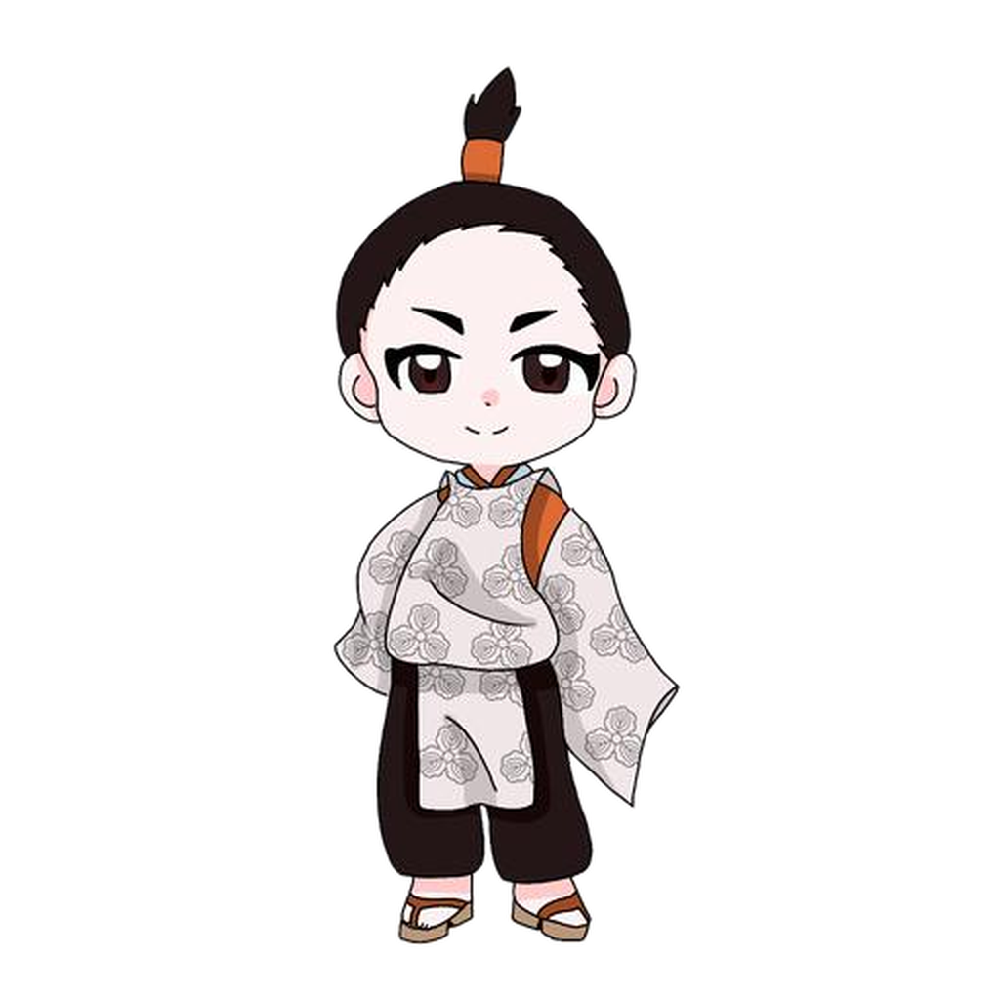

KASAI MEMORIAL FOUNDATION EST. 2026
歴史を守り、記憶をつなぎ、未来へ伝える。
葛西氏にまつわる史料、人物、土地の記憶を丁寧にたどり、確認できた事実と伝承を区別しながら、次の世代が学べる形で残していきます。
- 設立
- 2026.07.21
- 本拠点
- 岐阜県岐阜市
- 活動
- 調査・記録・発信


継承
RECORD · RESEARCH · EDUCATION
OUR MISSION
記録に敬意を。
伝えることに責任を。
葛西記念財団は、過去を美化するためではなく、残された記録を正しく読み、地域と人の営みを未来へ手渡すために活動します。
史料の出典を確かめ、事実・推定・伝承を明確に分け、訂正すべき点には誠実に向き合う。歴史を専門家だけのものにせず、子どもから大人まで学べる言葉と表現へ整える。それが私たちの基本姿勢です。
理念と活動原則を見る →LATEST NEWS
お知らせ
葛西
THE KASAI CLAN
HISTORY
葛西氏とは
平安時代末期に東国武士として歩み始め、鎌倉時代から戦国時代末期まで、現在の岩手県南部・宮城県北部を中心に足跡を残した葛西氏。
葛西清重と奥州合戦、地域支配の展開、約四百年にわたる歩み、1590年の奥州仕置、そして各地に残された城館・文書・系図・寺社・伝承を、複数の資料から丁寧に紹介します。
葛西氏を知る →OUR PROGRAMS
主な活動
調べる、残す、伝える、顕彰する。四つの柱を相互につなげ、継続可能な文化継承を目指します。
HISTORICAL TIMELINE
葛西氏の歩み
- 東国武士として成立
- 奥州合戦と奥州への展開
- 地域社会に根を下ろす
- 奥州仕置により領主支配が終わる
- 史料・遺跡・伝承として継承
TRUST & TRANSPARENCY
信頼される活動のために
団体運営規程、個人情報保護、情報公開、掲載内容の訂正方針を明らかにし、分かりやすい運営を積み重ねます。
JOIN US
メンバー加入
調査、記録、動画、デザイン、行事運営など、できることから参加できます。→CONTACT